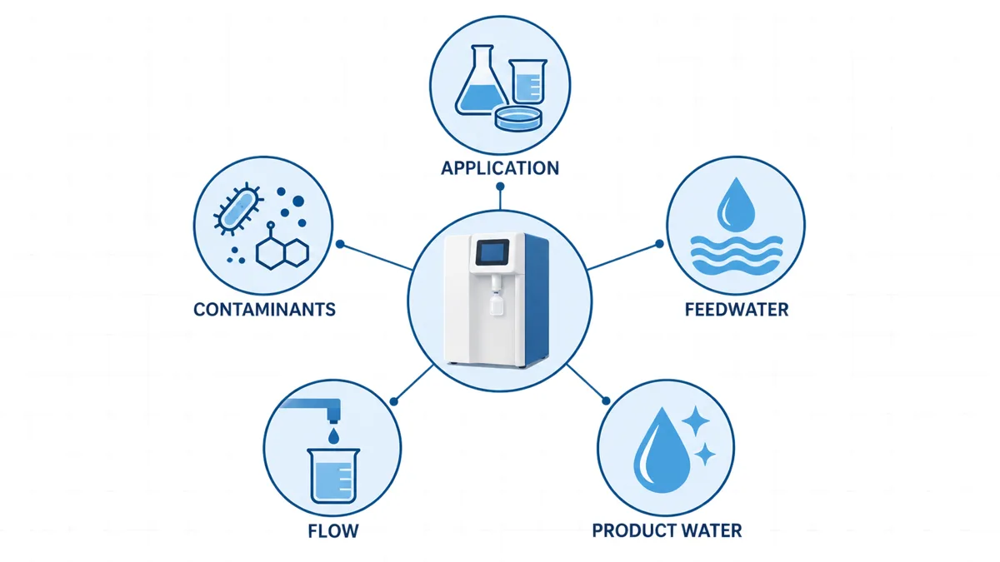
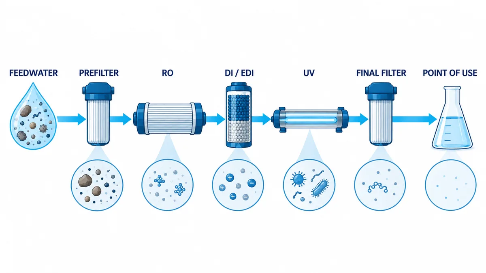

How to Choose a Laboratory Water Purification System
Application, feedwater, product-water quality, flow and technology — the five inputs that decide the system before any Type I, II or III label
More Engineering Guides ↗How do you choose a laboratory water purification system?
Choose the system by answering five questions in order: what the water will be used for, what the feedwater is, which product-water parameters must be met, how much flow is needed and which purification technologies close the gap. A Type I, ultrapure or 18.2 MΩ·cm label alone does not prove suitability, because different laboratory applications fail on different contaminants. This guide walks through the five inputs, the treatment stages that match them and the information to prepare before comparing systems.
On this page
- Step 1: Type I, Type II or Type III water?
- Step 2: Confirm the feedwater conditions
- Step 3: Define the product-water requirements
- Step 4: Define flow and dispensing
- Step 5: What each technology does
- Common treatment combinations
- Can pure and ultrapure water be stored?
- Why the same flow rate has different prices
- What to prepare before selection
Choosing a laboratory pure or ultrapure water system comes down to five questions: What will the water be used for? What is the feedwater? What product-water quality is required? What flow is needed? Which contaminants must be controlled? Answer these questions before choosing RO, DI, EDI, UV, ultrafiltration or final filtration. A label such as “Type I,” “ultrapure water” or “18.2 MΩ·cm” is not enough on its own because different laboratory applications are affected by different contaminants.

Step 1: Should My Lab Use Type I, Type II or Type III Water?
Water-quality requirements vary widely across laboratory applications. Water used for an initial glassware wash does not need to meet the same requirements as water used for LC-MS or molecular biology. Conversely, a resistivity of 18.2 MΩ·cm does not by itself prove that the water is suitable for cell culture or nuclease-sensitive work.
| Laboratory use | Common water-quality direction | Parameters to confirm |
|---|---|---|
| Initial glassware washing or washer feed | RO water or purified water that meets the equipment requirement | Hardness, conductivity and particles |
| Final glassware rinsing | DI water, Type II water or method-specified water | Conductivity/resistivity, ionic residue and microorganisms |
| Routine buffers and reagent preparation | Type II water or qualified DI water | Resistivity, TOC and microorganisms |
| HPLC or LC-MS mobile phases and reagents | Type I ultrapure water | Resistivity, low TOC, particles and background contamination |
| ICP-MS and trace-element analysis | Type I ultrapure water | Trace ions, metal background and container contamination |
| Molecular biology | Ultrapure or certified water matched to the method | RNase, DNase, microorganisms and, when relevant, endotoxins |
| Cell culture | Water suitable for the specific culture or reagent-preparation process | Microorganisms, endotoxins, TOC and ions |
| Analyzer or instrument feed | Follow the instrument manual | Water quality, flow, pressure and connection requirements |
This table shows common selection directions, not universal rules. Methods with similar names can still have different requirements, so the final specification should come from the actual method and instrument documentation.
Type I, Type II and Type III are often used as quick categories in laboratory water discussions:
| Common category | Typical direction of use |
|---|---|
| Type III | Washing water or feedwater for a further purification system |
| Type II | Routine reagent preparation, general laboratory work and final glassware rinsing |
| Type I | Sensitive applications such as HPLC, LC-MS, ICP-MS and molecular biology |
Start with the application, then confirm the measurable water-quality parameters. Type I, Type II and Type III are not fixed answers independent of the method, and different standards do not always define categories in exactly the same way.
Step 2: Confirm the Feedwater Conditions
A laboratory water system may receive tap water, softened or filtered water, RO water, or water from an existing central purification system. Different feedwater conditions require different treatment steps.
Before selecting a system, confirm at least the following:
- Feedwater source: tap water, well water, RO water or DI water;
- Pressure and temperature: whether they remain within the system's permitted range;
- Hardness and TDS: whether scaling or excessive loading of RO and ion-exchange stages is likely;
- Chlorine or other oxidants: whether they could affect membranes or downstream treatment media;
- Turbidity and particles: whether additional prefiltration is needed;
- Microbial condition: whether it could increase contamination risk in tanks and piping.
A system fed directly with tap water normally has to perform more pretreatment. If a laboratory already has stable RO or DI water, the point-of-use system can focus more closely on final polishing.
Two laboratories that both need Type I ultrapure water may therefore require different system configurations. The difference may come from the feedwater rather than the required product water.
Step 3: Define the Product-Water Requirements
Do not specify the output simply as “pure water” or “ultrapure water.” Where possible, define measurable parameters.
| Water-quality parameter | What it mainly indicates | Applications that commonly care about it |
|---|---|---|
| Conductivity/resistivity | Ionic contamination | Reagent preparation, ion analysis, HPLC and ICP-MS |
| TOC | Overall organic contamination | HPLC, LC-MS and trace-organic analysis |
| Microbial count | Bacterial and other microbial contamination | Reagent preparation, cell work, storage and circulation systems |
| Endotoxins | Pyrogenic material from certain microorganisms | Cell culture and other endotoxin-sensitive work |
| Particles | Material that may block instruments, contaminate samples or affect analysis | HPLC, precision instruments and trace analysis |
| RNase/DNase | Enzymes that can degrade nucleic acids | PCR, RNA work and other molecular-biology applications |
One point deserves special attention: 18.2 MΩ·cm mainly indicates very low ionic contamination. It does not prove that the water is free of organics, microorganisms, endotoxins, particles or nucleases.
Step 4: Define the Flow and Dispensing Requirements
This does not require a complicated calculation, but the actual pattern of use must be clear.
Confirm:
- the required production rate in L/h;
- whether water is used continuously or withdrawn in short, concentrated periods;
- the largest single withdrawal;
- whether a storage tank is needed;
- the number of dispensing points and whether they may operate at the same time;
- whether an instrument has a minimum inlet flow or pressure requirement.
For example, two laboratories may each use 50 L per day. One draws small volumes throughout the day, while the other needs 30 L in a short period each morning. Their daily volumes are the same, but their storage and dispensing arrangements may differ.
The purpose of defining flow is to match the system to the real working pattern, not simply to buy the largest nominal capacity. An undersized system can cause waiting, while excessive capacity or storage can increase stagnation and maintenance.
Step 5: Understand What Each Purification Technology Does
Laboratory water systems commonly combine several technologies because each stage controls different contaminants.

| Purification technology | Main role | What it cannot solve alone |
|---|---|---|
| Prefiltration | Removes larger particles and suspended matter and protects downstream stages | Does not remove dissolved salts or most small dissolved contaminants |
| Activated carbon | Reduces chlorine and some organics and protects RO membranes | Is not a final ion-removal step; poor maintenance can increase microbial risk |
| Softening | Reduces hardness and scaling risk | Does not substantially reduce the total dissolved-salt load |
| Reverse osmosis (RO) | Reduces most salts, particles, colloids and the overall load of several contaminant classes | RO alone does not normally produce the final water quality needed for sensitive analysis |
| Deionization (DI) | Removes charged ions | Does not alone guarantee low TOC, low microorganisms, low endotoxins or nuclease-free water |
| Electrodeionization (EDI) | Usually follows RO and continuously removes ions | Requires suitable feedwater and does not replace all final-polishing steps |
| 185 nm UV | Oxidizes some organic contaminants and helps reduce TOC | Does not replace RO or ion removal |
| 254 nm UV | Helps control microorganisms within a system | Does not remove ions or directly remove endotoxins |
| Ultrafiltration (UF) | Controls particles, selected macromolecules and contaminants such as endotoxins | Does not remove dissolved ions |
| Final filtration | Controls particles and selected microorganisms at the dispensing point | Requires correct maintenance and does not replace the upstream purification train |
This is why there is no universal answer to “Which is better: RO, DI or distilled water?” The processes address different problems. See distilled, deionized and RO water for laboratory use for a direct comparison.
Can RO Water Be Used Directly in the Lab?
It depends on the application. RO water can be suitable for many glassware-washing, equipment-feed and further-purification applications, but it does not normally replace Type I ultrapure water for sensitive analysis. HPLC, LC-MS, ICP-MS and molecular-biology work may require additional control of ions, organics, particles, microorganisms or nucleases.
If a laboratory already has a stable RO supply, it can serve as feedwater for an ultrapure-water system, allowing the downstream stages to focus on ionic and application-specific polishing. Final suitability should still be determined from the experiment and instrument requirements.
Common Treatment Combinations for Different Uses
The following examples help explain system structure. They do not mean that every laboratory must use exactly the same configuration.
| Target use | Common treatment approach |
|---|---|
| General washing or feedwater for another system | Prefiltration + activated carbon + RO |
| Routine reagent preparation and Type II water | Pretreatment + RO + DI or EDI |
| Low-TOC water for HPLC and LC-MS | RO + DI/EDI + polishing + 185 nm UV + suitable final filtration |
| ICP-MS and trace-ion analysis | RO + ionic polishing, with careful control of trace contamination from dispensing and containers |
| Molecular-biology water | RO + ionic polishing, plus UF, UV or suitable final treatment based on nuclease, microbial and endotoxin requirements |
| Multi-use laboratory | A base purified-water system with point-of-use polishing, or separate dispensing arrangements for different applications |
More treatment stages are not automatically better. Every additional component adds consumables, maintenance and a surface that must be controlled. A suitable system uses the necessary stages to meet the actual requirement at the point of use.
Can Laboratory Pure and Ultrapure Water Be Stored?
DI and ultrapure water do not have one universal shelf life for every application. During storage, water may absorb carbon dioxide from the air and may also be affected by the container, microorganisms and repeated opening.
Use these simple principles:
- Use ultrapure water for sensitive analysis as soon as practical after dispensing;
- Follow the labeled expiration date and storage conditions for commercially packaged reagent water;
- Set an internal use period for laboratory-stored DI water according to its application;
- Use a clean, closed and clearly labeled container, and never return poured water to the original container;
- Do not use the water for critical work if the internal use period has passed, storage history is unknown or required quality results fail.
Water used for general washing and water used for LC-MS, ICP-MS or cell culture do not have the same tolerance for storage-related change. Instead of asking how many days all DI water can be stored, first ask what the water will be used for and which parameters must remain within specification.
Why Do Laboratory Water Systems With the Same Flow Rate Have Different Prices?
Two systems with similar production rates can still have very different prices. The difference usually comes from the treatment target and system configuration rather than appearance.
| Price factor | Why it changes cost |
|---|---|
| Feedwater condition | More difficult feedwater may require more pretreatment |
| Product-water specification | Simultaneous control of ions, TOC, microorganisms, endotoxins and particles requires additional treatment and monitoring |
| Flow and dispensing points | Production rate, tanks, pumps and multiple outlets change system size and scope |
| Monitoring functions | Online resistivity, TOC, alarms and data recording add instrumentation |
| Storage and distribution | Tanks, circulation piping, vent filtration and sanitization design add components and work |
| Consumables and maintenance | Cartridges, membranes, resin, lamps, final filters and change frequency affect long-term cost |
| Qualification and documentation | Installation, operation, performance qualification and record requirements add delivery work |
A request that says only “20 L/h ultrapure-water system” is therefore incomplete. It should also state the feedwater source, target water quality, main applications, dispensing pattern and parameters that must be monitored. Prices become comparable only when the input requirements are comparable.
What Information Should Be Prepared Before Selection?
Before selecting a laboratory water system, prepare the following information:
- The experiments, instruments and washing steps that will use the water;
- The feedwater source and basic water quality;
- The target resistivity or conductivity;
- Any TOC, microbial, endotoxin, particle or nuclease requirements;
- The required production rate and largest single withdrawal;
- Whether a tank and multiple dispensing points are needed;
- Required online monitoring, alarms or data recording;
- Responsibility for consumables, sanitization and routine maintenance.
These eight items describe what the laboratory actually needs and reduce the risk of choosing a system based only on “Type I,” “ultrapure water” or a single numerical specification.
Technical note: This article provides general selection guidance for laboratory pure and ultrapure water. It is not a substitute for the governing method, instrument manual or laboratory quality procedure, and it does not describe specific brands or products.
Recommended systems for this application
Systems commonly specified for the duties discussed in this guide: